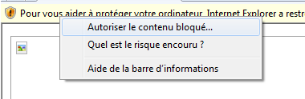

Ces enregistrememnts sont inclus pour vous aider à faire certaines taches complexes dans Paratext 7.1.
Dans la liste à gauche, choisissez une vidéo.
Pour mieux voir la video, appuyez sur F11 pour entrer dans le mode plein ecran. Appuyez encore sur F11 encore pour revenir.
| (Si une barre jaune s'affiche au-dessus le fenêtre, vous devez cliquer à droite sur la barre jaune et choisir Autoriser le contenu bloqué, puis cliquer sur OK (Oui).  ou |
SIL Cameroon 2010 (Jenni Beadle, Balan Marc, Bebiyeme Raymond, Matthew Lee)